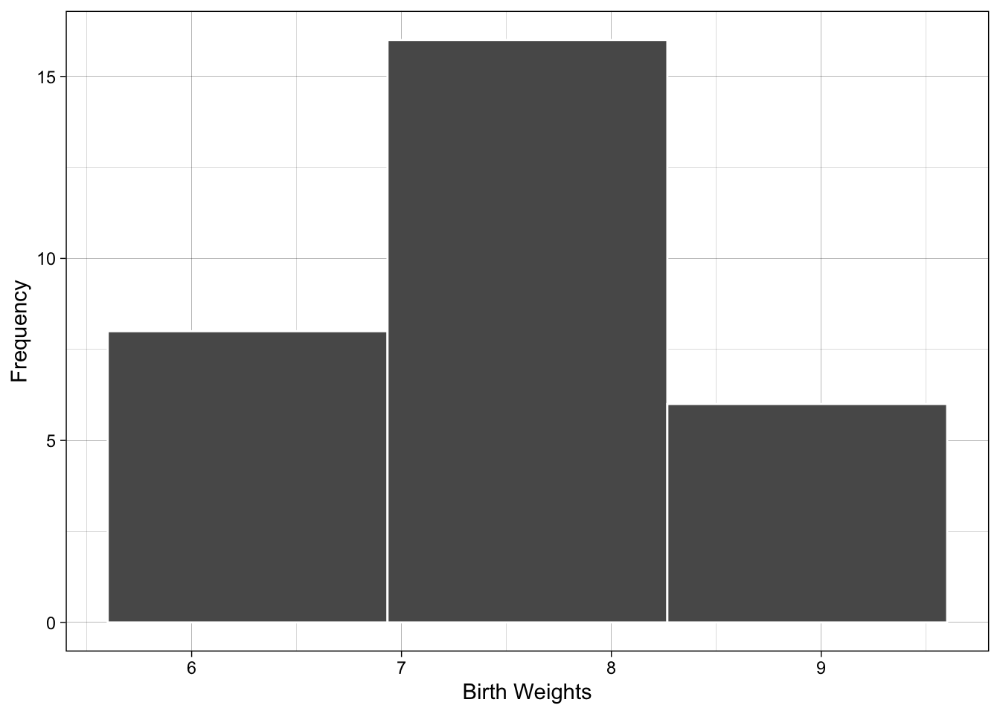

| 7.2 | 7.8 | 6.8 | 6.2 | 8.2 |
| 8.0 | 8.2 | 5.6 | 8.6 | 7.1 |
| 8.2 | 7.7 | 7.5 | 7.2 | 7.7 |
| 5.8 | 6.8 | 6.8 | 8.5 | 7.5 |
| 6.1 | 7.9 | 9.4 | 9.0 | 7.8 |
| 8.5 | 9.0 | 7.7 | 6.7 | 7.7 |
Lecture 1
Welcome & Relative Frequency Histograms
1.4 Relative Frequency Histograms
- Definitions
- class
- class boundaries
- class width
- class frequency
- relative frequency histogram
Choosing Number of Classes
| 25 | 50 | 100 | 200 | 500 |
|---|---|---|---|---|
| 6 | 7 | 8 | 9 | 10 |
Choosing class width
Range of Data
\[ 9.4 - 5.6 = 3.8 \\ \]
Divide and round
\[ 3.8/8 = .475 \approx .5 \]
| Class Boundaries |
|---|
| [5.6,6.1) |
| [6.1,6.6) |
| [6.6,7.1) |
| [7.1,7.6) |
| [7.6,8.1) |
| [8.1,8.6) |
| [8.6,9.1) |
| [9.1,9.6) |
- Method of left inclusion
Tally Data in each of Boundaries
| Class.Boundaries | Freq | Relative.Frequency |
|---|---|---|
| [5.6,6.1) | 2 | 2/30 |
| [6.1,6.6) | 2 | 2/30 |
| [6.6,7.1) | 4 | 4/30 |
| [7.1,7.6) | 5 | 5/30 |
| [7.6,8.1) | 8 | 8/30 |
| [8.1,8.6) | 5 | 5/30 |
| [8.6,9.1) | 3 | 3/30 |
| [9.1,9.6) | 1 | 1/30 |
Draw Histogram
Examples with different number of classes (or bins)
The graphs below show what happens if you use 3 and 20 classes - compare to the figure above

Example 1.11
| 6 | 7 | 1 | 5 | 6 |
| 4 | 6 | 4 | 6 | 8 |
| 6 | 5 | 6 | 3 | 4 |
| 5 | 5 | 5 | 7 | 6 |
| 3 | 5 | 7 | 5 | 5 |
- Use intgers as class definitions
| Class.Boundaries | Freq | Relative.Frequency |
|---|---|---|
| [0.5,1.5) | 1 | 0.04 |
| [1.5,2.5) | 0 | 0.00 |
| [2.5,3.5) | 2 | 0.08 |
| [3.5,4.5) | 3 | 0.12 |
| [4.5,5.5) | 8 | 0.32 |
| [5.5,6.5) | 7 | 0.28 |
| [6.5,7.5) | 3 | 0.12 |
| [7.5,8.5) | 1 | 0.04 |
Using Histograms
- data location
- data shape (skewed left, skewed right)
- proportion/probability
Making histograms in Excel
Download a sample Excel file here
Looking forward
- sample vs population
- if you look at 30 more birth weights will you have same histogram?
Other Resources
Homework
1.4.17-20, 1.4.21-22, 1.4.26, 1.4.33
Answers: Chapter 1 - Section 1.4